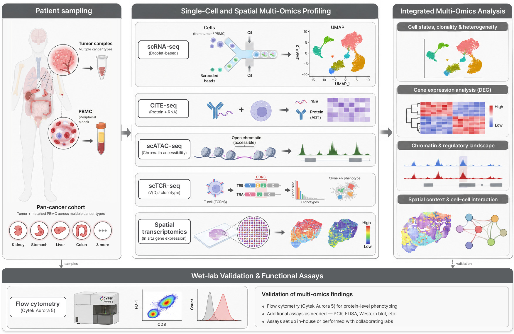

Research Focus
The ultimate goal of Ryu Lab is to decode how immune cells recognize and respond to
tumors at single-cell resolution, and to translate these insights into next-generation
cancer immunotherapy. Using patient-matched tumor tissue and peripheral blood (PBMC)
from a pan-cancer cohort, we integrate single-cell and spatial multi-omics profiling
with wet-lab validation to study immune cell heterogeneity, T-cell biology, and the
tumor microenvironment. Our work spans the following core research directions.

1) Single-Cell and Spatial Multi-Omics Profiling
Single-cell RNA sequencing (scRNA-seq) to resolve cellular heterogeneity and transcriptional states
CITE-seq for simultaneous surface protein and transcriptome measurement at single-cell resolution
Single-cell ATAC-seq (scATAC-seq) to profile chromatin accessibility and regulatory landscapes
Spatial transcriptomics to map gene expression within intact tissue architecture
Integrative analysis across modalities to define cell states, differential gene expression, and chromatin-based gene-regulatory landscapes
2) T-Cell Receptor Repertoire and Immune Dynamics
Single-cell TCR sequencing (scTCR-seq) for clonality and antigen-specific immune response analysis
Characterization of T-cell subtypes and their functional states in the tumor microenvironment
Integration of clonal and transcriptional data to trace T-cell differentiation trajectories
3) Tumor Microenvironment and Clinical Translation
Cell-cell communication and spatial neighborhood analysis within the tumor microenvironment
Integration of clinical metadata with multi-omics measurements for treatment-response analysis
Discovery of biomarkers linking immune cell states to patient outcomes
4) Wet-Lab Validation and Functional Assays
Spectral flow cytometry (Cytek Aurora 5) for protein-level phenotyping of immune cell states identified by multi-omics analysis
Additional assays as needed, including PCR, ELISA, and Western blot
Assays established in-house or performed with collaborating laboratories